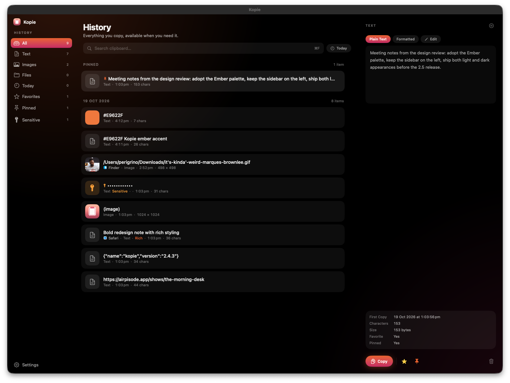

1 Main window — before & after
Three columns, same order, same information. The sidebar stays exactly where it is; only its surface changed — the selected category is now a gradient pill instead of the system's grey fill. The list's rows became cards with a gradient tile, and the detail rail gained a gradient primary action.
Before

After
History
Everything you copy, available when you need it.
⌘F